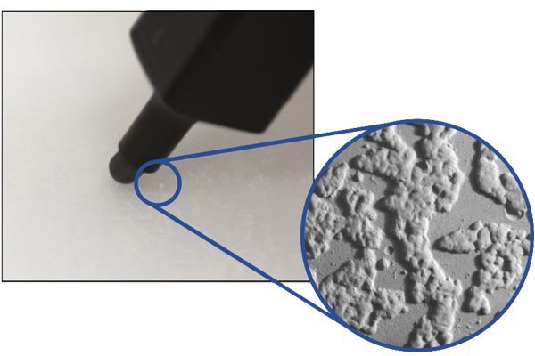
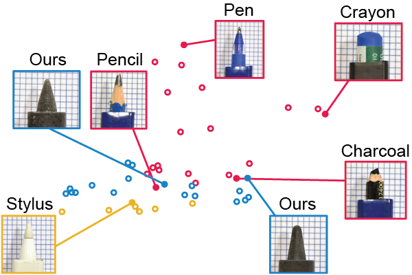
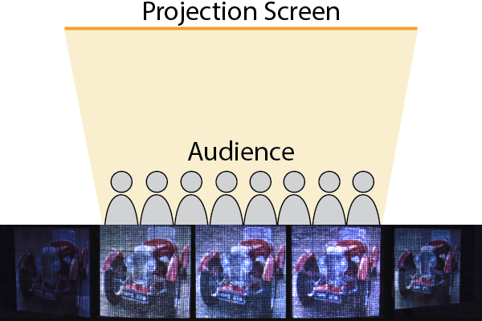
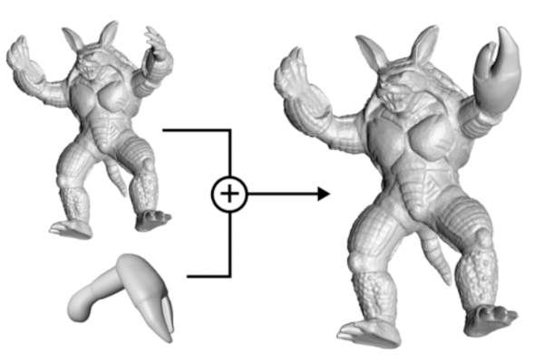
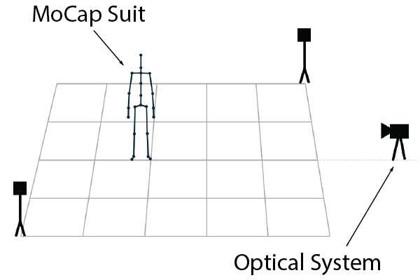
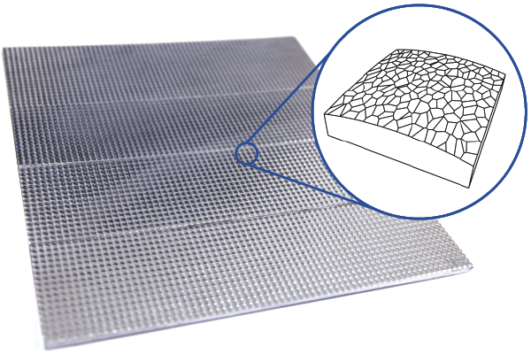
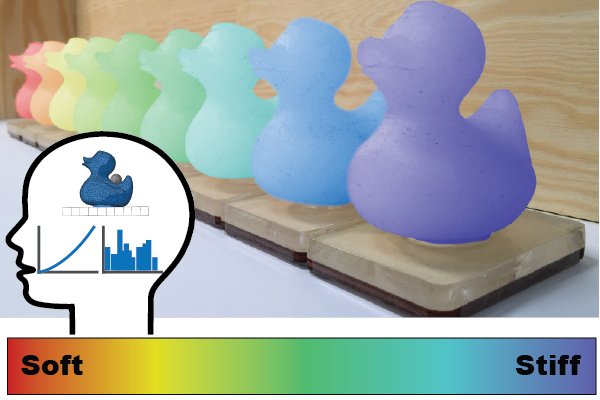
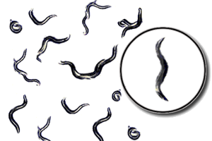
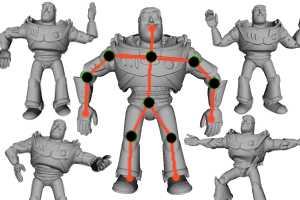

Michal Piovarci
PhD. Student at USI Lugano
contact: michal.piovarci@usi.chShort Bio
I am a PhD. student at USI Lugano in the group Perception, Display, and Fabrication led by Piotr Didyk. I received my master's degree in applied computer science from Comenius University in Bratislava, Slovakia in 2014. After graduation I did an internship at Saarland University working on compliance perception of materials. Currently, I am persuing my PhD. at USI Lugano with focus on fabrication, geometry processing, numerical simulation, and human percpetion.
Projects

Fabrication-in-the-Loop Co-Optimization of Surfaces and Styli for Drawing Haptics
Michal Piovarci, Danny M. Kaufman, David I.W. Levin, Piotr Didyk
SIGGRAPH 2020
Michal Piovarci, Danny M. Kaufman, David I.W. Levin, Piotr Didyk
SIGGRAPH 2020

Perception-Aware Modeling and Fabrication of Digital Drawing Tools
Michal Piovarci, David I.W. Levin, Danny M. Kaufman, Piotr Didyk
SIGGRAPH 2018
Michal Piovarci, David I.W. Levin, Danny M. Kaufman, Piotr Didyk
SIGGRAPH 2018

Design and Analysis of Directional Front Projection Screens
Michal Piovarci, Michael Wessely, Michal Jagielski, Marc Alexa, Wojciech Matusik, Piotr Didyk
Computers & Graphics 2018
Michal Piovarci, Michael Wessely, Michal Jagielski, Marc Alexa, Wojciech Matusik, Piotr Didyk
Computers & Graphics 2018

Skeletex: Skeleton-texture Co-representation for Topology-driven Real-time Interchange and Manipulation of Surface Regions
Martin Madaras, Adam Riecicky, Michal Mesaros, Martin Stuchlik, Michal Piovarci
PACIFIC GRAPHICS 2018
Martin Madaras, Adam Riecicky, Michal Mesaros, Martin Stuchlik, Michal Piovarci
PACIFIC GRAPHICS 2018

Optical-inertial Synchronization of MoCap Suit with Single Camera Setup for Reliable Position Tracking
Adam Riecicky, Martin Madaras, Michal Piovarci, Roman Durikovic
VISIGRAPP 2018
Adam Riecicky, Martin Madaras, Michal Piovarci, Roman Durikovic
VISIGRAPP 2018

Directional Screens
Michal Piovarci, Michael Wessely, Michal Jagielski, Marc Alexa, Wojciech Matusik, Piotr Didyk
Symposium on Computational Fabrication 2017
Michal Piovarci, Michael Wessely, Michal Jagielski, Marc Alexa, Wojciech Matusik, Piotr Didyk
Symposium on Computational Fabrication 2017

An Interaction-Aware, Perceptual Model For Non-Linear Elastic Objects
Michal Piovarci, David I.W. Levin, Jason Rebello, Desai Chen, Roman Durikovic, Hanspeter Pfister, Wojciech Matusik, Piotr Didyk
SIGGRAPH 2016
Michal Piovarci, David I.W. Levin, Jason Rebello, Desai Chen, Roman Durikovic, Hanspeter Pfister, Wojciech Matusik, Piotr Didyk
SIGGRAPH 2016

Physically Inspired Stretching of Non-rigid Bodies
Michal Piovarci, Martin Madaras, Roman Durikovic
SCCG 2015
Michal Piovarci, Martin Madaras, Roman Durikovic
SCCG 2015

Skeleton-based Matching for Animation Transfer and Joint Detection
Martin Madaras, Michal Piovarci, Jana Behal Dadova, Roman Franta, Tomas Kovacovsky
SCCG 2014
Martin Madaras, Michal Piovarci, Jana Behal Dadova, Roman Franta, Tomas Kovacovsky
SCCG 2014
Rampaging Tornado
Small rendering project from university.
Small rendering project from university.